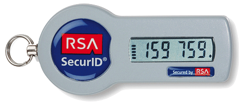

Podstawowy typ uwierzytelniania, stosowany od zarania informatyki:
login + hasło
Najprostszy w realizacji, nie wymaga dodatkowego sprzętu.
Bazuje tylko na wiedzy i pamięci użytkownika.
Hasła łatwo przechwycić przez keyloggery, sniffery, wysłanie użytkownika na fałszywą stronę logowania do usługi albo kradzież bazy haseł (hash+salt!).
Pojawiła się koncepcja haseł maskowanych
Aby poprawić jakość haseł pojawiły się generatory haseł
Aby ułatwić życie pojawiły się menadżery haseł
Nigdy nie używaj takiego samego albo podobnego hasła w różnych serwisach i usługach
Nigdy nie wiesz, jaki idiota projektował moduł uwierzytelnienia
Obecne najpopularniejszy typ uwierzytelniana w systemach klasy enterprise i coraz popularniejszy „w cywilu”.
Poza wiedzą o loginie i haśle (traktowanych jako jeden element uwierzytelnienia), użytkownik ma dodatkowe urządzenie albo przedmiot dostarczające drugiego elementu uwierzytelnienia, zawsze o charakterze zmiennym.
Ten dodatkowy element, tzw „drugi składnik” (ang. „second factor”) jest tym, co użytkownik musi mieć przy sobie, żeby móc się zalogować do systemu bądź usługi. Mechanizm nazywa się „uwierzytelnieniem dwuskładnikowym”, „Two Factor Authentication”, w skrócie 2FA
Praktycznie zawsze jest to kod o długości 6-10 cyfr (wyjątek – YubiKey, 44 znaki alfanumeryczne)
Kody jednorazowe „per use” (bez zegara).
Każde użycie generuje nowy kod. Najprostsze, ale można „ukraść” następny kod
Odmianą HOTP jest Yubikey-OTP
Kody jednorazowe zmienne w czasie.
Najczęściej raz na 30 sekund generowany jest nowy kod, ważny tylko w trakcie tych 30 sekund.
Google authenticatior, RSA-SecurID (własny standard)
Kody jednorazowe, robisz to źle
Koszt od 0 (HOTP/TOTP na darmowej bibliotece po stronie serwera, wykorzystanie Google Authenticatora albo odpowiednika po stronie klienta) do bardzo dużo (bardzo droga infrastruktura RSA SecurID z rocznymi opłatami licencyjnymi)
HOTP/TOTP oparte są o współdzielony sekret (RSA to tylko nazwa firmy, nie ma tam algorytmu klucza publicznego). Kompromitacja serwera pozwala przewidzieć wszystkie kody wszystkich użytkowników do momentu wymiany wszystkich kluczy.
Kryptografia asymetryczna
To sam użytkownik jest składnikiem uwierzytelnienia. Jest to dziedzina metod biometrycznych
wygoda ⋅ bezpieczeństwo ⋅ cena-1 = const